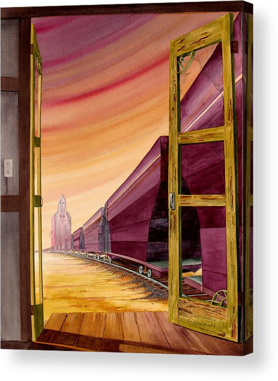

Double Liminality

Doubling Liminality is the narrative device where a character has an experience in a liminal space located within another liminal space. Tolstoy uses doubled liminality to transform ordinary settings into the conditions for a character’s radical transformation. Experiences of radical transformation—like birth, death, and the abandonment of one value system for another—are crucial to Tolstoy’s narratives. In Anna Karenina, the main plot between Anna and Vronsky involves abandoning family morality in favor of passion, while complementary plots involve death, birth, and the creation of new families. Liminality appears often in Tolstoy’s work because it is through this device that he stages events that accommodate the radically transformative experiences essential to his distinct authorial style.
The concept of liminality originates with the anthropologist, Viktor Turner, who defined liminal entities as “neither here nor there; they are betwixt and between the positions assigned and arrayed by law, custom, convention, and ceremonial” (Tuner, 359). A liminal space is a transitional space that belongs neither to the “inside” nor the “outside”; rather, it is the “in between” space, like a corridor, entryway, or staircase. In the space of liminality, ordinary laws and conventions are temporarily lifted, allowing the character to initiate a radical new beginning, relationship, or self-transformation. The doubled liminality of the space only heightens this effect, and it is within such spaces that characters undergo the most transformative experiences. One of the novel’s most important instances of doubling liminality is Anna and Vronsky’s first meeting. The couple first met on the platform at Moscow train station. Vronsky is awaiting his mother, who, by chance, is seated next to Anna on the train from St. Petersburg. When the train arrives, Vronsky enters his mother’s compartment, but pauses at the door to let Anna through. As they pass one another in the doorway, Vronsky feels the “need to glance at her again,” and upon doing so, senses “something particularly gentle and tender in the expression of her pretty face when she [walks] past him” (Tolstoy 63). The passageway is the transitional space within the greater liminal space of the train station. In the doorway, Vronsky and Anna achieve a greater level of intimacy (exchanging glances and subtle flirtations) than would have otherwise been plausible between a married woman and a bachelor of 19th-Century Russian high society. In addition to the lifting of social conventions, the doubled liminal space signals an important personal transformation for both characters. From this point on, Anna’s and Vronsky’s lives are permanently redirected. No longer will they abide by the conventions of their lot; instead, they will pursue a relationship that will make them the targets of intense social ridicule and exclusion. Moreover, the outer layer of liminality—the train station—is the site of a dramatic death that primes the reader for the particularly tragic trajectory of their relationship. While Vronsky and Anna leave the compartment with the others, a railway worker is run over, prefiguring Anna’s later suicide by train. Both the initial spark and dramatic end of Anna and Vronsky’s relationship are captured in the two layers of liminality of the train compartment doorway. Kitty’s birth sequence is another representative example of doubled liminality. When Kitty experiences the first signs of labor, she and her maid begin to move the home’s furniture around, including Kitty’s bed. As more furniture is rearranged after the doctor, midwife, and Kitty’s mother arrive, the house itself becomes a liminal space. Its contents are rearranged in unfamiliar and disorienting ways; the ordinary layout and conventions of the space are subverted during this extraordinary event. In the house, outside the room where Kitty is giving birth, Levin feels as if time is passing unrecognizably and that “none of life’s usual conditions…existed anymore” (Tolstoy 714). His attention drifts, and he sometimes forgets Kitty, allowing him to experience moments of calm. This feeling of disorientation is typical of the liminal space; however, the doubled liminal space of Kitty’s bed carries a different meaning for both Levin and Kitty. The bed is the space of transformation for Kitty. Through the agonizing experience of labor, Kitty breaks free of her previous life and takes on a new identity as a mother. We learn from Levin that after Kitty’s birth, “Her already radiant look became even more radiant as he came up to her. On her face was that same transition from the earthly to the unearthly to be found on the faces of the deceased; but while that was a farewell, this was a greeting,” (Tolstoy 719). Levin recognizes that Kitty is beginning a new phase of her life, having transcended to a more noble or important post: motherhood. However, Levin himself has not yet transformed into a father. When Kitty finally gives birth, Levin is “unspeakably happy” because he is relieved Kitty has survived, not because he has a son (Tolstoy 719). Levin experiences the birth sequence at the border of the transformative space, the bedside. He feels agony witnessing Kitty’s transformation, but he himself has not yet experienced the paternal transformation. By doubling liminality, Tolstoy creates extraordinary circumstances in which radical character transformations can occur. In these spaces of doubled liminality, the character transforms into a transcendent or “unearthly” condition, in which earthly (shallow, superficial, selfish) concerns fall away, and the most essential values of the human experience (e.g., family) come into view.Works Cited
- Tolstoy, Leo. Anna Karenina. Translated by Rosamund Bartlett, Oxford University Press, 2014.
- Turner, Victor. "Liminality and Communitas." The Ritual Process: Structure and Anti-Structure, Aldine Publishing, 1969, pp. 94–113.